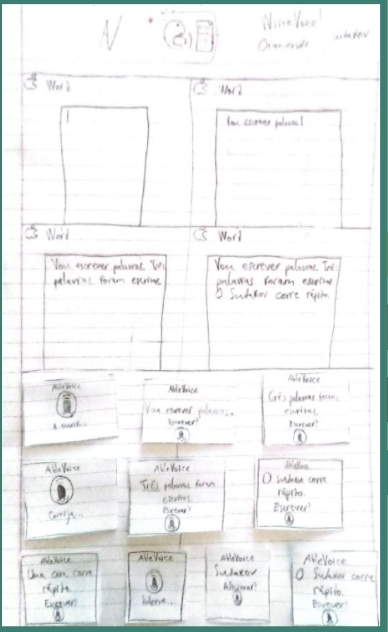
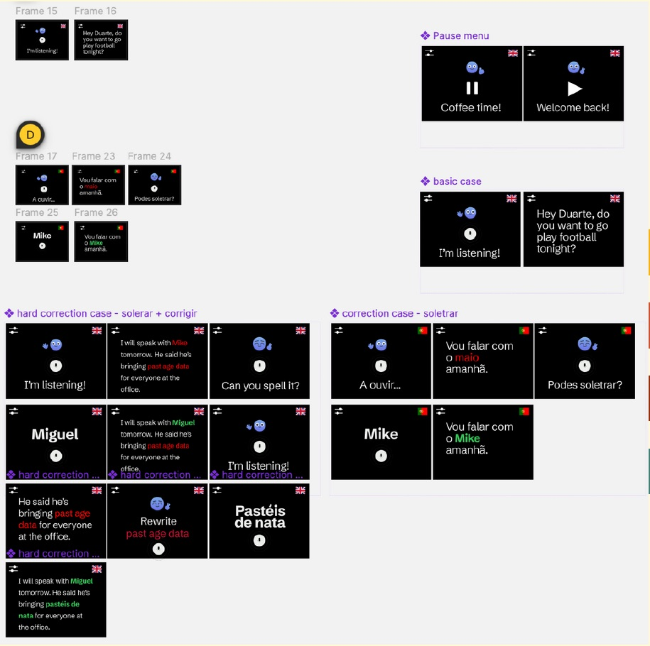

Design & Interaction Studio · Inclusive design
AbleVoice: an adaptive voice-input keyboard
Typing and reading what you've typed can be exhausting with limited movement and low vision. Over six weeks, we co-designed a voice-first writing tool with a 17-year-old student who lives with both.
Context
Our co-designer was born with an arteriovenous malformation, which left him with right hemiparesis, slightly altered speech and reduced vision. He already used zoom and pan, voice search and Siri, but he still had to lean in close to keyboards and screens to find keys and check what he'd written.
Problem statement: people with motor and visual impairments caused by neurological conditions need accessible ways to type and interact with digital devices, so they can communicate, learn, work and keep in touch with others.
Process: three co-design sessions
- Session 1 — understand. A semi-structured interview and observation of everyday tasks on his phone, tablet and computer.
- Session 2 — test and ideate. Usability tests of writing a short message on each device, then joint ideation focused on voice and audio feedback.
- Session 3 — prototype. We tested a paper prototype with the Wizard of Oz method: the team spoke the app's feedback out loud, acting as its back end.


The design
- Voice only: dictate, spell and correct without touching a keyboard.
- Multimodal feedback: the app reads back what it understood, and highlights corrected words in colour.
- Visual accessibility: a high-contrast interface, adjustable zoom and large type. These were the co-designer's own top requests.
- Works across devices and languages: one flow for phone, tablet and computer, in Portuguese and English.
Outcome
The co-designer found the spoken feedback intuitive, and with the prototype he could write more easily and correct errors with less effort. We wrote up the process as a research paper in ACM format, with me as first author. The next step would be a working prototype with real speech recognition.
Main lesson: showing a prototype got far better feedback than asking abstract questions. Having something to react to is what made co-design work.